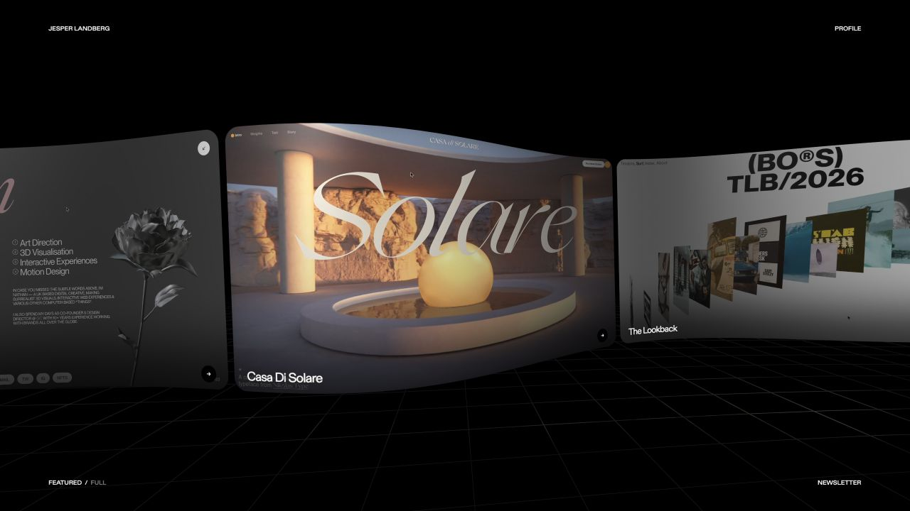
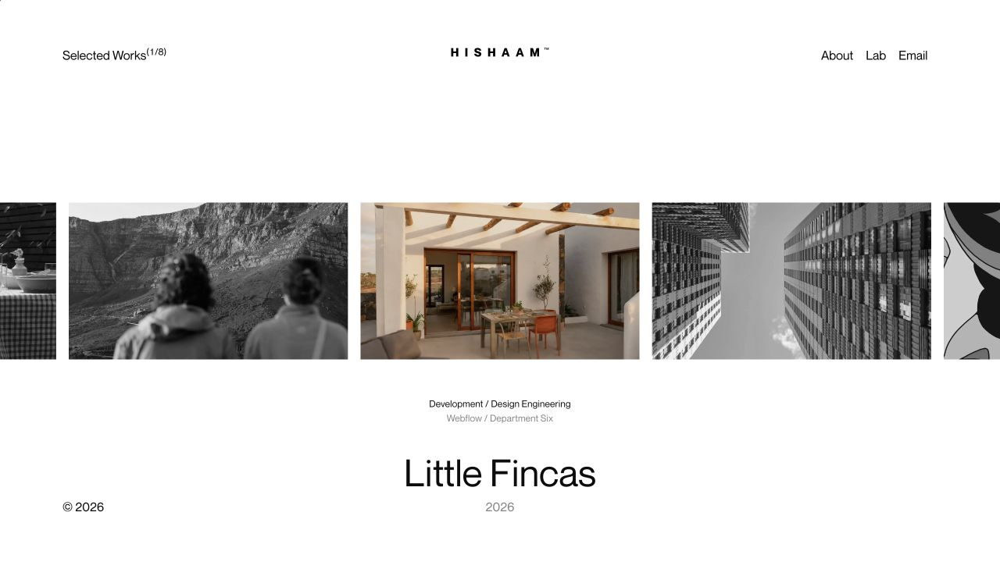
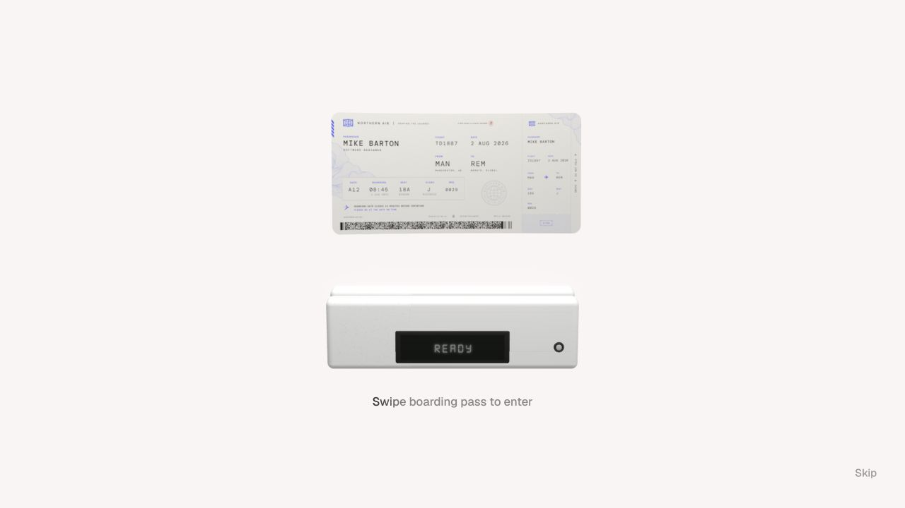

Superseded proposal. Stephen rejected the Quiver-led opening proposed in this earlier board. Its recommendation is withdrawn. See the fresh market survey and three creative directions.
The work has to
carry the experience.
The references connect distinctive interaction to visible work, specific contributions and a clear professional identity. The current portrait gives most of the opening to an unconvincing asset and leaves the evidence of your ability too small.
01 / References inspected in the browser

Actual desktop capture. No generated concept imagery.
Jesper Landberg
Large, curved project surfaces occupy the scene. Partial neighbouring projects give depth and show that there is more to explore. Navigation stays compact.
Observed: dragging advanced the selected project from Casa Di Solare to Book of Happiness.
Use: spatial composition and motion that expose the portfolio itself. Do not infer: the exact renderer or source geometry from its appearance.
Visit the reference
Second state after dragging: project counter, imagery and contribution text change together.
{kind=link}
Hishaam Fataar
Project imagery, personal contribution and collaboration credits sit together. Restrained typography lets the work establish the visual range.
Observed: horizontal dragging changed Little Fincas to RIO Property, including the counter and credits.
Use: put your ownership beside each project. Quiver needs its direction, script, generation, audio and finishing credited together.
Visit the reference
Career page after using Skip. The travel theme continues beyond the entry.
{kind=link}
Mike Barton
The boarding pass, scanner, aircraft window and career timeline belong to one visual idea. His Fahlo case study then explains the product problem, design decisions and reusable delivery assets.
Observed: dragging changed the scanner to its reading state. Skip opened the career page. The full scan-to-entry transition was not verified.
Use: finish the central interaction and carry its logic through the content. The case study must establish professional judgement after the opening earns attention.
Visit the reference02 / What ThreeUI actually supplies
A useful rendering technique.
A limited component.
The public Gallery source constructs sixteen curved image panels with Three.js cylinder geometry and rotates the group. It includes visibility handling, resizing and reduced motion.
It does not supply project selection, links, keyboard browsing or video playback. Those behaviours need deliberate implementation. Its older colour API also needs adapting to the Three.js version in this project.
Verified scope
Community Gallery source and repository documentation inspected. Community code is MIT licensed; the public repository excludes Pro components.
The live demo triggered a browser security warning. It was not bypassed. This is a source-level feasibility finding, not a completed demo test.
Useful for proving spatial presentation with your existing assets. It does not solve portrait likeness or provide finished art direction.
03 / What the target employers need to see
Your range needs evidence of connected ownership.
| Role | Your strongest relevant work | What the presentation must establish |
|---|---|---|
| Luma / Creative Technologist | Quiver, UNCX motion production, production tooling | Aesthetic judgement, finished media, knowledge of model failures and repeatable workflows. Show how shot planning changed the result. |
| Duvo / Design Engineer | Badger Club, Unified Menu, Solana Diary's human approval interface | Implemented React, interface states, architecture and verification. Distinguish a live beta from designs awaiting implementation. |
| ElevenLabs / Product Designer | Product flows, Badger Club, Academy; Quiver as creator experience | A difficult user problem, alternatives, technical constraints and evidence behind the final decision. Audio production alone does not establish voice-product design expertise. |
Duvo and ElevenLabs descriptions were available. The supplied Luma opening could not be verified; the linked Luma evidence is a different official Los Angeles hybrid posting available in search-index text. See the role evidence report for source status and limits.
Your differentiator: taking an open brief through creative decisions and finished production, then building tools or software where the work needs them. Quiver demonstrates that combination within one project. A list of five disciplines does not communicate it by itself.
04 / The production decision
The approved portrait needs a credible source asset.
The available photograph shows one softly lit profile. It does not establish likeness from the front or opposite side. More material and lighting adjustments cannot validate the missing geometry.
A captured, cleaned head mesh is the better basis for recognisable rotation and changing reflective materials. Generative reconstruction is a candidate-making process, with no established identity guarantee.
Read the production research and primary sourcesRequired proof before integration
A head shown alone from the front, both three-quarter views and profile, compared with real references. Inspect neutral clay and graphite under rotation.
The present head fails this checkpoint. A scan or suitable additional reference capture is still needed. A generated concept image cannot serve as proof that the asset exists.
Recommendation for review / Not another implemented redesign
Give the next working proof to the portfolio itself.
I recommend an isolated Three.js opening with large Quiver imagery and a film surface, using depth and camera movement to reveal the connection between the finished film, prepared shot assets and production process. Keep your role and the project link readable beside it. UNCX motion, product interfaces and production systems then become equally substantial destinations.
- Prove one scene: actual Quiver assets, one selected project, one deliberate camera transition, readable contribution credits and a working route into the case study. Review the running scene before expanding it.
- Set the quality checkpoint: inspect desktop and phone layouts, artwork framing, typography, transition pacing and the still fallback. The first frame must communicate useful work before anyone interacts.
- Expand only after the proof holds: connect the other projects, retain the complete ten-project index and six earlier collections, and finish the role-specific evidence. Keep the portrait as a separate asset decision until its likeness is demonstrated.
This is a proposed change from the approved portrait direction. It has not been applied to the website.
05 / CV and screening
Test parsing. Strengthen the claims behind it.
The current white CV already uses ordinary text and clear sections, with three role variants. Greenhouse's guidance identifies common extraction failures; it does not establish that quick rejections are caused by formatting. The next content priority is stronger linked evidence of implementation, decisions and outcomes. Preserve actual job titles and project status.
Research limits and work completed
Research completed: three supplied reference sites visually inspected; interactions checked as described; ThreeUI source inspected; target-role requirements mapped to existing career and project evidence; portrait production methods checked against primary documentation. No new website or model implementation was performed in this research pass. Phone behaviour of the external references, performance benchmarks and employer-specific CV parsing were not verified.